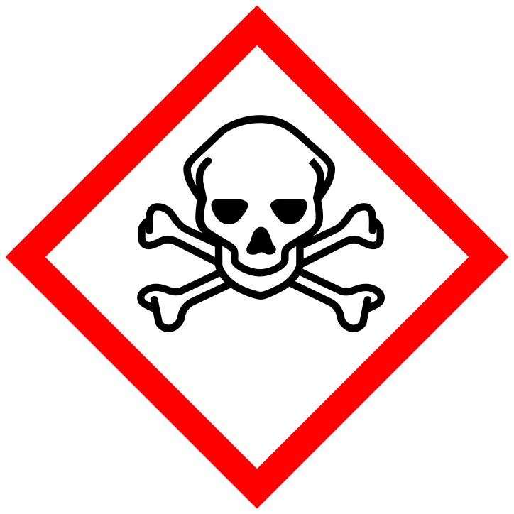

Every sign on the next screen is a real symbol you could find on a factory floor, in a lab, or in our own shop. Before the answer appears, call out what you think the sign is warning you about, and what you'd do in response.
What does this sign mean? Click to reveal.
Every sign you just guessed follows the international ISO 7010 system. Before you read the pictogram inside, the outline and background color already tell you what kind of message you're looking at, which is exactly why a worker can react to a sign from across a noisy shop floor.
Prohibition. An action that is forbidden in this area.
Warning. A hazard that requires caution or extra awareness.
Mandatory. A specific protective action you must take.
Safe condition. Exits, first aid, and rescue equipment.
Fire equipment, such as extinguishers, alarms, and hose reels.

GHS chemical hazard. A separate global system, used on containers rather than on walls or equipment.
American shops often pair a pictogram with a text signal panel. The header color tells you how severe the hazard is before you finish reading the sentence underneath.
Safety researchers call it sign blindness: a warning stops working the moment it blends into the wallpaper. A sign you walk past every day still needs to register the instant it matters, whether that's the first day you touch a new machine or the one day something goes wrong.
Before you run any machine in this shop for the first time, find its signs. Know which ones are prohibitions, which are mandatory, and which mark the nearest safe exit or first aid station. That five-second habit is what the signs are actually for.